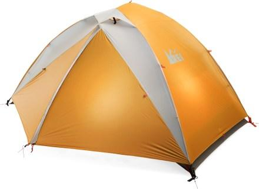

Lightweight and weather worthy, this sturdy 3-season tent offers many comfortable touches for 2 backpackers, along with an expressive twist—you can choose from 6 different fly colors.

Fly design allows sides and ends to be rolled up to maximize views and airflow; everything also rolls down quickly if a storm blows in
Curved zipper tracks on fly operate smoothly; fly's 4 ceiling vents provide airflow to prevent condensation buildup
Color coding and hubbed pole assembly simplify setup
REI-exclusive tension-truss architecture creates stable vertical sidewalls and generous headroom while minimizing pole weight
2 doors and 2 vestibules offer easy access and additional covered storage
Pockets and hang loops help organize the interior
Includes guylines with tighteners, stakes and pole-repair tube, compression stuff sack, pole bag and stake bag
Fly / footprint minimalist pitch option lets you leave the tent at home and use the fly, poles and footprint (sold separately) as a lightweight shelter